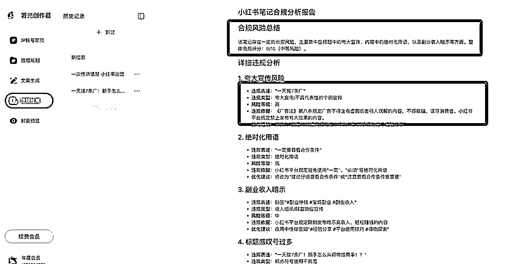
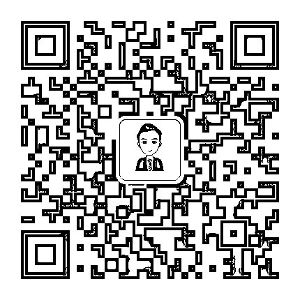
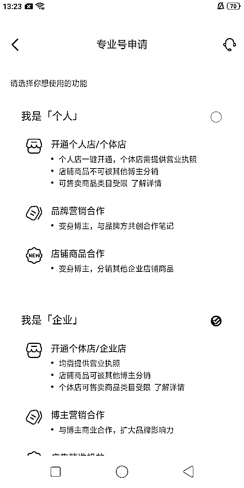
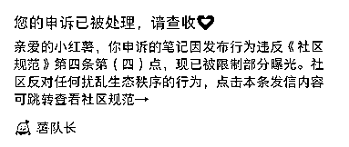
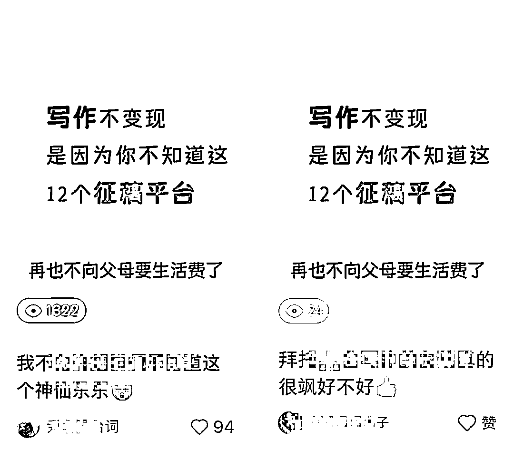
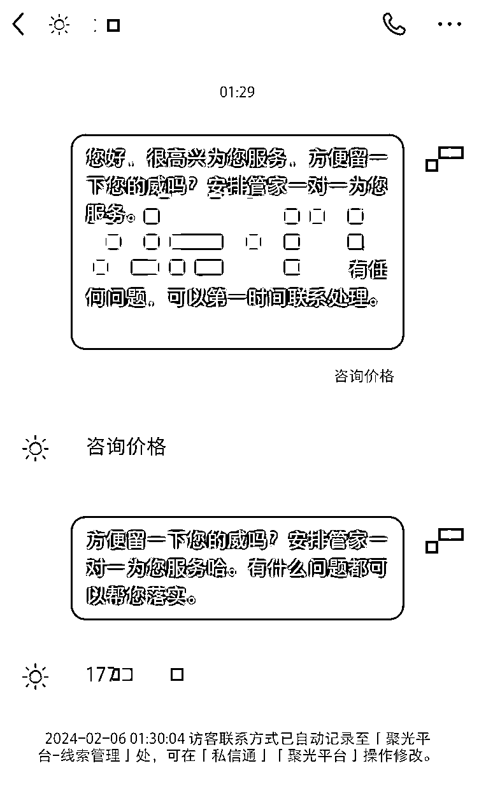
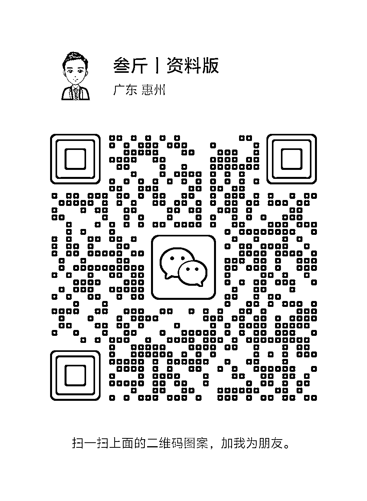

来源：https://p03a4vs9s2.feishu.cn/docx/IkpcdPywzoTEF9xSvqScDhDVn0g
Halo，我是叁斤，95后自由职业者，公众号：叁斤，微信：Msan53
我发现在小红书运营过程中，大家都会遇到各种各样的问题
为了不重复回答，我把一些重复提问较多的问题汇总成问答集，方便我在看到相同问题时，可以直接复制答案过去
这两天我把提问次数最多的问题也汇总进来了，目前问题有一百多个，后面还会继续更新
本文档为叁斤对小红书问题的回答汇总，内含账号、运营、变现、引流……等问题，供大家参考，问题不分难易顺序，内容不定时更新；
如本文档不能解决您的问题，可以向叁斤（Msan53）提问，我会挑合适的问题收录进来，每周一清；
发布时间：2024年 9 月 23 日
更新时间：2025年 9 月 07 日
发布笔记之前，可以在：https://sgcreator.zhimoxiezuo.cn/ 这个网站检测一下笔记情况。

遵守平台规则是你在小红书进行任何商业活动的前提。建议定期查阅小红书官方发布的最新规则和政策。
以下是一些核心规则的参考入口（请注意，平台可能随时更新链接，建议以小红书App内或官方网站的最新指引为准）：
《小红书社区规范》：https：//agree.xiaohongshu.com/h5/terms/ZXXY20221213003/-1
《小红书社区公约》：https：//www.xiaohongshu.com/crown/community/agreement?fullscreen=true
《社区商业公约》https：//school.xiaohongshu.com/rule/detail/5d67e65f0000000000000000/62738ce116a4f800136cbe3a?jumpFrom=school
《小红书专业号禁入行业有哪些》https：//school.xiaohongshu.com/helper/detail/1416?jumpFrom=pro
《蒲公英审核规范》： https：//ad.xiaohongshu.com/help/docs?id=2760
《蒲公英审核指南》：https：//ad.xiaohongshu.com/help/docs?id=2756
【蒲公英合作笔记-低差营销案例解读】https：//doc.weixin.qq.com/doc/w3_AIoA6QbFAO0P60xgVqCTHaEGU3Pgp?scode=ANAAyQcbAAgeDqhv4dAIoA6QbFAO0
《薯条审核规范》：https：//ad.xiaohongshu.com/help/docs?id=2761

不需要，老手机卡、老小红书号也没问题。老小红书号没用过也没问题，但是不能是违规、限流状态的
不需要！新号不需要养号，注册账号就能发布笔记。但如果是长期不登陆的账号，或者之前违规过的，可以养一下号再运营。
特殊情况：如果是新号要发布带营销性质的内容，就需要养一下号再发稿
但这“养号”并不是浏览点赞，而是要发一些日常内容去给平台“看”，告诉平台，你是真实用户来分享的
平时刷什么跟发什么不相关，刷什么内容，只能证明你喜欢看什么，跟你内容推荐给谁没关系
兴趣标签和内容标签是分开的
同上，养号不是靠刷的。刷内容只能让系统认为「你喜欢什么内容」，不能帮助你的笔记推送给对应人群
没影响，只要账号没有明显违规限流都可以用
如果是引流私域，有没有粉丝对你不重要。只要笔记能做得好，0粉一样可以引流私域
开店的也一样，0粉开店，笔记做好可以马上出单
这个情况下可以切换使用，不会有什么影响
但是跟引流的账号要区分开，引流的账号很容易违规
账号标签不是靠刷内容打上的，新号注册，刷垂直内容，系统只能认为你是喜欢这个内容的人，而给你推送更多这个内容。并不代表你发的内容会推送给相同人群！
要让你笔记按标签推送给相关人群，还得从内容本身出发。内容打上对应标签，布局好相关的关键词，才能让你的笔记推送给相关标签的人
笔记修改后会影响曝光。
数据不好，修改一下首图和标题，有可能数据会更好。
数据好的，如果修改内容时添加了违规词，也可能会违规限流。
另外，修改很大概率会再次触发审核，如果内容比较敏感，处于违规边缘的，尽量不要修改。
如果投放薯条的时候提示广告，可以把可能违规的措辞改一下或者删减掉，审核通过时再次投放薯条，也可能会通过
笔记间隔1～2小时比较好
1、首图尺寸统一，建议都调整成3:4格式（视频也可以）
2、主页色调统一，重点突出，最好加上封面标题
昵称：简单、好记、无生僻字、小众
头像：与个人赛道、定位风格一致
简介：突出自己身份，展示自己的价值点
如果有粉丝基础换赛道的话，首先考虑粉丝人群，换的赛道跟原有粉丝人群相似或者重叠的会好一些
如果没有粉丝基础的话，直接换就行。
具体换什么赛道，可以从变现方向考虑，离钱越近越好
小红书薯条属于内容加热工具，投放效果是根据内容优质度来看的，内容越优质，投薯条效果就越好
所以，如果笔记发布后，隔天发现数据不错，互动率高，可以适当投一些薯条加热一下
数据差的笔记没必要投
1、自检、申诉看笔记是否违规
2、如果是广告笔记，则降低广告营销型重新试
3、把一些可能敏感的词删掉，或者用谐音代替（用查词工具找），改掉并重新审核通过后，再试试投放
投放时间没有严格规定，根据自己内容类目的用户人群来判断，有些人下午投放数据好，有些晚上好，都不一定。
规则设置的话，一般人群这些选择智能推荐就行，投放时间6~24都可以，如果测试笔记，可以拉长12h，测试效果不错，可以追加6h集中曝光
账号少的话，20个内，走流量和Wi-Fi都没问题，如果账号很多，超过20个，就要做好账号隔离，尽量不链接同一个Wi-Fi
20个也不是标准，实际要看平台当下的规则怎么样
1、账号是容易违规的类型，比如需要引流的，就用4G，否则1个账号违规，容易连带同一WiFi其他账号
2、正常做账号矩阵，如博主接广告变现的或走平台转化，就不需要担心WiFi问题，不要超过20个账号在同一个WiFi下一般都没问题
但是如果你要引流私域，最好还是用4G，安全一些。
如果要更方便管理，建议用苹果手机，相互传输数据也很方便，还能直接使用live图
现在iphone xr以上的会好一点，如果预算有限，也可以iphone 8以上
苹果设备的话，可以直接用隔空投送。如果是安卓设备，可以用数据线，或者飞书、微信、QQ等工具，亲测飞书文档就很好用
一个账号建议一天3～5条，如果做不到这个频率，也可以日更1条。还做不到的，至少也应该做到周更3条，任何时间段发布都没影响
少账号之间互相点赞没问题，但是通过大量买赞、刷赞的行为，小红书是不允许的。刷完之后虚假数据会被小红书删掉。
不要大量删除，可以先隐藏，慢慢删
显示“已违规”的，直接删了
评论有违规营销，或者引流嫌疑，就会被平台限制
矩阵账号之间最好内容是不一样的，否则没了矩阵的意义。
矩阵的每个账号发布不同类型的内容，可以快速测试哪个类型转化率最高
看个人项目，大部分情况下，矩阵都是同一个赛道去放大的。比如旅行社的，可以做多个旅游矩阵，不同目的地的号等，都属于旅游赛道
正常情况下，审核通过后就在推流了。在不火的情况下，自然流大概推3-5天，如果一两天没到100，大概率内容不好
如果笔记流量明显上升，可以用小号在评论区引导评论，带一下评论区节奏
日常情况下不需要
流量券只能推广「获得流量券之后发布的笔记」，比如，9月22日获得流量券，9月22日之前发布的笔记，都不能使用。之后发布的笔记才能使用
不好的评论可以直接删除。看到有人打广告、截流，都可以删除，对笔记没什么影响
这种内容没什么商业价值，对账号权重之类的也没什么帮助
目前只有专业号有人工客服的入口
网页版小红书就可以直接复制笔记文案啦，如果是图片文案，可以用微信截图识别文字，视频文案可以用“轻抖”
先用不同模板发布，测试一下哪个点击率最高。然后把最高点击率的封面固定下来
不用，小眼睛能到50，至少说明没被限流。主要内容不行，可以从选题开始调整
选题、封面和标题，全都换一遍
小红书是双列瀑布流展示，用户看到封面、标题，感兴趣了才会点击进去笔记
如果点击进去的是视频笔记，那用户可以上滑、下拉，切换到下一个视频，类似抖音
切换到的视频不需要用户点击，直接展示在用户面前
所以从点击率方面，视频的内容天然比图文要高，能做视频，当然选择视频
酷狗、qq音乐、网易云，都有很多bgm推荐，先从这些网站找到合适的音乐，记下名字，去下载mp3格式就行
关注一个对标账号，小红书会推荐相似账号给你。给对标笔记点赞、收藏，小红书也会推荐相似的笔记给你。
在别的账号的收藏页，也可以找到其他优质的笔记，把这些笔记提炼成选题，收集在自己的选题库中
不需要，新账号没流量的话大概率都是内容出了问题
薯条是加热工具，只能让原本就能火的笔记更火，不能让不火的笔记变火
这种情况一般就是内容不好，平台给推了流量，但是笔记内容不好没承接住
正常情况下，小红书新笔记会有“保量推荐”，大概意思是，笔记发布后24小时内保证有一定量的曝光，但曝光不是平均分配，是有波动的，如果提前给完了保量，后面就正常跟旧笔记竞争了
举个例子：
假设新笔记24小时内保1000个曝光，笔记发布后前1小时已经给了900个曝光，那剩下23小时就只有100个保量曝光了
所以会出现笔记发布短时间内有点赞，之后就没数据的情况。就是笔记质量不够好，保量之后竞争不过其他笔记
具体的流量推荐可以看这篇：
只有这两个账号的话，没问题的。一卡一机一号在账号少的时候不用太关注
可以的，账号不多的时候没问题，我也经常来回切换3～5个账号
只要是正常运营的，都可以链接公共网络
如果是做大批量矩阵，或者违规的内容，就要注意IP隔离，整个手机不管有没有运行小红书，都要隔开网络
手机app会自动后台运行，即使关闭软件，后台依然有程序在运行的
长时间没有运营的号，可以浏览一下再发。
日常浏览、互动，活跃个3~5天再发稿，会好一些。
如果数据还是很差，看小眼睛情况，个位数的，可以申诉看是否违规。
如果几十几百的，那可能只是笔记质量太差
不需要注销，只要是没有违规的，都可以直接用
可以发一下日常笔记看看数据是否正常
实名认证不能取消，只能注销账号才能释放实名认证
不实名认证，对笔记推荐没有任何影响。但如果要开通专业号，开小红书店铺和蒲公英的话，必须要做实名认证
如果是双开应用，是没问题的。切换登录也没什么问题。
但如果一开始就发营销信息，或者要用于违规引流，就不可以。否则违规可能导致连坐
小红薯等级是很早之前的东西了，对账号权重没什么影响，也不用刻意去养这个等级
不需要，原来账号没有违规，浏览量也正常的话，可以换了类型发
发布一段时间，浏览好一些的时候，陆续把之前的笔记隐藏起来“仅自己可见”就行了，不需要删除
如果注销前严重违规过，则重新注册也极容易违规。如果注销前无违规无限流，重新注册也不会违规限流
至于算不算新号，其实不重要，新注册后一样能获得成长流量券
跟Wi-Fi同理，如果你做的事跟平台博弈，动不动就违规的内容，那就一卡一机一号，否则容易封设备
如果你是正常运营，跟平台和平发展，一机多号没问题
小红书还专门出了“切换登录”，足以证明一机多号不会有影响
我已经运营账号好几年了，只有几次笔记违规，也不牵连账号，一机多号从没出过问题
会的，小红书有个“笔记相似度推荐”，笔记与笔记过于相似，大概率会推送到相同人群
同一时间被用户刷到2个一样的内容，她只会点击一个
但如果把时间间隔开，她可能会重复点击，也可能她不在线，就推送给其他人
不大，只要不做引流、不发太多过分违规的信息（如恶意虚假宣传），一般都没问题的
我就是用手机开热点给另外3个设备用
刚开店，如果还没确认选品的话，可以先不填写物流模板和发货地址
等确定好了供应商，就按照供应商的发货地址填写就行了
一个手机只能开一个点，一个实名认证也只能认证一个店
如果卖的东西是一样的，就不需要下架，在内容上调整一下就好了
如果卖的东西都不一样，就要把产品全部下架，上架新产品
这个跟品类有关，大部分品类用个人身份证开店就行，少部分品类必须企业店，具体的可以看看小红书的经营大类一览表
另外，如果后期有投流计划，或者有投放博主计划的，就企业店会好一些
一个身份证，可以开一个店铺。一个营业执照，可以开2个店铺
如果用个体营业执照开店，显示实名认证被占用，大概率是选择的时候点错了
在申请专业号时，虽然「个人」和「企业」都可以申请「个体店」
但是点「个人」这里申请，可能会出现身份证占用的问题。点「企业」申请，就直接用营业执照

要先把店铺关了，过了公示期再注销账号
店铺账号不需要养号，发的笔记都可以带产品连接
不会，小红书开店跟流量分配没有直接关联
但是开店后笔记内容可能会不自觉的往硬广方向写，导致没人观看
服装类：一手app、搜款网、人人货源。其他百货：1688、拼多多、义乌购。
最常用的货源渠道：1688、拼多多
但需要注意规避无货源代拍风险
不了解电商，也不了解运营的话，不太推荐直接做无货源电商，很容易违规
一件代发不等于无货源，有很多批发商都支持一件代发，这种属于正常商业合作行为
如果已经限流了，就先养号，限流期限过去后，把内容做的更精细，需要原创
可以，店铺类目可以后期增加。但是增加类目后，保证金可能会变化
比如，原本交了1000元保证金，添加了别的类目后，该类目保证金为20000，则需要补交19000保证金
开企业店，每个企业店可以绑定3个个人主理人和3个企业主理人，也就是可以7个账号绑定同一家店
大部分可以选择：艺术品及周边>艺术定制>虚拟定制
先打电话问问快递能不能追回，有些快递公司就有这种服务，不行就跟买家说，只能收到货退货了
没有影响，按提示把类目改回来就行了
小红书是号店一体，如果店铺严重违规，可能会影响账号，具体要看违规情况。比如，有些违规会提示限制商品笔记曝光。
如果是绑定了主理人，那这些关联账号是不会影响的
品牌号给人第一感觉都是营销、广告，所以运营方式跟个人号不一样，涨精准粉也会更困难。但如果要泛粉，可以通过抽奖的方式获得
企业号一般都是扩大品牌影响力和卖货的需求，遵循一个道理：
产品是1，运营是0，产品不好，运营多厉害都没用。
如果产品好，运营方面定位就好做好，你是以什么身份去卖？卖的东西能帮人解决什么问题？满足什么需求？为什么要买你的？
企业号可以跟个人号打配合一起做，或者加入一些企业号的人设，效果会更好
1、先把店铺的地理位置弄好
2、笔记内容增加地区属性（加入地区关键词），然后笔记添加店铺定位
3、企业号可以设置一个店铺地址，具体操作看企业号后台
不一定，每个类目投放成本都不一样，现在投放商家的数量越来越多多，信息流的投放成本也随之增加。
现在的投放需要更专业、更精细化去筛选达人、目标人群以及搜索关键词
搜索流的转化目前是最高的，需要在小红书造势，还得结合KOC、KOL和信息流一起做
可以，企业账号可以绑定3个个人主理人和3个企业账号，这些账号不用开店，可以关联到同一个主号店铺，可以挂主店的产品链接
需要注意的是，3个个人主理人账号必须实名，且认证为主理人账号。企业号认证企业即可
一个营业执照（含个体户执照）只能认证2个企业号
可以，但需要特殊申请报白，具体条件需要咨询官方直客
不需要，这个随时可能封号的
引流怎么做都有风险，不收费的规避方法，就是用小号来引流，把风险转移到小号
收费的方法：直接投聚光客资收集，平台开白名单，最安全
拼多多可以购买注册卡、流量卡，月租在19.9、29.9左右，流量很多，也可以注册“和多号”，和多号是虚拟卡号，可以注册小红书
挖客，做搜索
找到自己同行的账号和爆款笔记，看他们评论区，只要有评论是在咨询的，就去私信他，要联系方式
最精准的流量，就是用户主动搜索来的。在笔记中做关键词布局，再找一批人，主动去小红书搜索某个关键词，模拟真实用户找到你的笔记互动，这样能有效提升搜索排名，但不稳定
最稳定的方法，开通聚光，做搜索广告，可以把有关的关键词都买下，这样能保证展现
如果需要排在最前面，就去做抢占赛道，能保证你的笔记在广告位的第一位或者前三，但费用很高
不能，大概率不会审核通过。但如果你是有比较多粉丝量（至少5万+），那可以放上去，用一些emoji或者🐧来替代，平台不会马上下架
不能，所有外链都会被识别
是的，自2025年1月7日起，商家只能通过私信获客根据完成引流，私信获客工具包含留资卡、企微/个微/电话等商家名片，能满足不同的联系方式交换需求，禁止其他在私信内发布或者在欢迎语中配置自己联系方式的行为。
不会，平台允许商家在私信内对用户提供咨询服务后，用户主动留下联系方式的行为。但商家需要注意不要出现频繁向用户索要联系方式的骚扰行为。
即使投放聚光广告，也禁止商家在私信内明文发出自己的手机号/微信号或引导到其他第三方平台交易
话术举例：“可以加老师的V【Msan53】详细为您介绍哦
"+18X11111111领福利”、“去XX平台搜索可领福利哦”。
聚光投流用户，可以使用私信获客组件引导用户点击/添加，话术举例：“感兴趣您可以点击这个【企微卡片】
添加我们顾问老师哦”、“服务定制可点击卡片上的「复制微信」联系我们哦~“
解答完用户问题邀约有意向的用户主动留资是允许的行为，话术举例：“您留个电话号码吧，我们为您预约上优惠活动”、“需要可以留下您的微信，为您详细介绍~”
持续性最好的，就是小红书频道分类和及千瓜、新红等第三方平台中有专门分类的
每个赛道都有变现好的和变现差的，如果要看大盘数据，可以从灰豚数据、蒲公英等渠道看每个赛道的博主报价，按大盘来说，接广告的肯定是美妆护肤和母婴、家居是最多的
但是这个没法覆盖引流变现和电商变现，电商要在小红书平台看销量，引流变现的无法统计
所以建议根据自身优势、喜好来选择若干个赛道，在一个个去查这个赛道的变现能力，选择最适合自己的
变现模式主要有三种，电商、广告和带货
引流私域没算进去，引流私域也是变现能力很强的，但是引流的项目有非常多
每个类型的变现效率都不错，也都有做的很好的人，具体看自己的优势在哪
首先确定你想怎么变现？常见的有接广告、带货和卖货，如果你想接广告，那可以做成买手人设，不仅可以接广告，还可以带货赚分佣
爆文和转化没有直接相关的，一般在做爆款的时候，围绕自己产品去介绍，可以植入产品的使用场景。
不是所有爆款都会带来转化，卖货的账号不需要过于追求爆文，内容跟产品相关、引流精准粉丝，比爆款笔记更重要
做小红书接商单变现的经常会遇到一个问题：平时流量很好，一发广告就没流量
不知道怎么把产品和笔记结合起来，导致广告很硬，播放量很低
提供一个思路给你们：
把你账号所有关键词、产品卖点、痛点都列出来，找交集，找每个点之间的关联
这个关联就是个能把产品和笔记结合的好选题
例如：个人成长号跟养生茶
账号关键：努力工作、赚钱
卖点：养身体…
工作和赚钱之间可以插入“熬夜”，熬夜和养生之间就有了关联，这就是你的选题
博主笔记带货，需要满足粉丝>1000，并且完成专业号认证
在确定笔记限流后，要先判断笔记问题出在哪里？是笔记问题还是账号问题？
有些限流是会告诉你限流原因，按官方提示去修改就没问题了，有些则需要自己去申诉看问题出在哪里
按上述方法直接申诉，官方会给申诉结果，按官方给的结果去调整笔记就好。
如果给的结果很模糊，比如这个

违反社区规范第四条第四点，但里面还有很多小点，不知道具体哪个问题的，可以看看是不是账号本身的问题
方法1：同样是按上述操作，但是把“笔记申诉”换成“账号申诉”，看申诉结果是否账号有问题，如果账号有问题，一般会直接告诉具体问题，可以按提示调整或者养号
方法2：遇到模糊不清的违规，如上面提到的第四条第四点，那可以把笔记放到另一个正常的号上发，看是否同样限流。

换号也限流，那就是笔记问题。换号不限流，那就是账号问题。换号发布笔记不限流，原账号的申诉也没问题，那就可能是账号太新、权重太低，平台盯得紧，这时就不要发明显营销的内容了
一般申诉后，平台会给比较准确的违规信息，如前面笔记违规提到的，包含过度裸露内容等，把对应的图片删掉或者找不那么暴露的图片替代即可，一般替换审核通过后，流量会恢复正常
常见的违规很多都发生在“广告营销”、“引流”、“低质量内容”、和“伪科学”等等，发生这些违规的时候，按要求修改掉对应的句子即可，流量可以恢复原状
如果账号确实有问题的话，一般会告诉你是什么原因导致，要怎么修改。但一般账号违规只能进行养号或者放弃账号
养号方法1：如果没有说明限流几天的情况下，可以发布一些不带任何营销的日常内容，并在平时刷一下小红书互动一下
发布日常内容的时候看一下互动量，看流量是否正常。（一般发一些带话题性的段子很容易测试出来）
养号方法2：如果说明了限流几天，那这几天正常浏览互动即可，不需要发布任何笔记。到期限后再发笔记，一般就会回归正常
偶尔一两次不影响，但是次数太多，可能会判永久重置简介
小红书笔记审核有很多次，发布时有初次审核，当笔记达到一定曝光量后，会再次进入审核
也就是说，如果笔记本身存在违规，即使发布后能通过，火了，也有概率在后面审核中被判违规
正常的，偶尔会遇到审核特别慢的情况，有啥一天都没审核过
这种情况比较少见，只要删掉重新发布就好了
一般用零克查词可以查询敏感词，现在工具也很多，网上搜一下 敏感词查询，大量工具
现在平台对二创、搬运的识别水平越来越高，即使现在可以审核通过，但火了之后也有可能被二次审核违规
不一定，可以把爆款内容里面的顺序打乱再实拍，会好一点
直接拍的话可能自然流上没问题，投流会审核不过
1、看阅读量，如果发布后隔天阅读量还是个位数或者小2位数，那可能被限流了
2、直接申诉笔记，看平台反馈
3、查看有没有收到站内违规通知
4、点击薯条 投放界面，看是否可以投放薯条
申诉最直接，有问题也会给你指出来
不会，但如果很担心的话，可以拉黑他。
投放薯条的审核标准比正常笔记的要高，如果笔记中带有产品推荐等营销性质，是不能投放薯条的
但不能投放薯条不意味着违规，依然可以正常获得推荐流量
如果连正常推荐流量都没有，那才是违规了
看情况，如果只是封号，没影响
但如果是封设备，就有影响，会直接封号
普通违规、单篇笔记违规、简介昵称违规等轻度的，不需要
轻度限流，有明确时间限制的，有也不需要
如果限流期限结束后也没恢复的，建议换号
新规定，自己的笔记如果重复发，只修改个别字的情况下，也可能判违规
小红书查的不是词语本身，而是「词意」
举个例子，你说：我最好的闺蜜、我和我闺蜜天下第一好，不违规。因为这是你的主观判断
但如果你说，这个产品是全国最好用、这个产品的去屑效果是所有同类产品中最好的。这就有可能违规了

开通企业号，并且充值“聚光广告”，在聚光广告中，近30天消耗满1000后，下一个周二可以开通“私信服务组件”
在小红书专业号平台，打开“私信服务组件”，再打开“欢迎语助手”，就可以设置自动回复了
找官方直客开聚光账户，最低充值5000，自己开户，最低充值2000
找代理开户，可以拿到5~10%不等的返点
找官方开户，如果遇到好的直客，解决问题的速度会比较快。如果遇到不好的，可能开户后不怎么管你，而且没有返点
找代理开户，解决问题的速度不如官方直客，如封号，要捞账号，效率会慢很多。好处是有一定返点
如果小红书图片，包括首图在内的每张图片都很类似，不介意哪张图片做首图的话，可以开启封面优选
如果首图是经过设计，其他图片都不适合做首图的话，就不要开启封面优选
标题优选也一样
可以投放在不同计划中，但最好每个计划之间存在变量，不要建立2个一模一样的计划，里面的笔记也一模一样
千帆ARK主要给开店的商家投放，操作比较简单，可以快速出单。但是不好放量，人群不能细化圈选。
聚光可以投放商销，也可以投放互动，投放的选择性更多，自由度更高，容易放量。但操作难度比千帆ark要高
开店账号，要快速出单，预算有限的话，建议投放千帆ark。如果预算充裕，想放量投放，就千帆ark结合聚光一起投
不会，广告流量和自然流量是分开的。而且广告流量拉动数据，在一定程度上是会帮助自然流量破圈的
没有，只能手动拉黑同行
境内主体准入规范：https://ad.xiaohongshu.com/help/docs?id=2767
不严重违规的话，可以找直客捞回。严重违规捞不回
出证书后马上就可以认证企业号
不影响，创意之间互相独立
主要从几个方向调整：
先判断被禁言的原因
如果是满足当下消耗条件的情况下，因为违规引流被禁言，大概率是误判，可以找直客解封
如果未满足消耗条件的情况下被判定违规引流，也可以找直客捞回来
这种情况一般会发生在刚开始投流的时候
但是，被禁言如果是因为其他原因，比如截流被平台发现、发表不正当言论等等，这种情况大概率不能解除
相同素材，不同计划，就不会撞线，计划与计划之间要存在变量。
比如，相同素材，计划中人群不同，可以
或者相同素材，相同计划，一个roi设置为3，一个设置为2，也可以
不会，产品种草是投互动和曝光比较多，客资是投引流，互不干扰
会的，用户都有从众心理，如果一个笔记互动比较高的，投放出去的成本会降低一些，成本低了，roi就高
可以的，全站是把笔记同时投放在搜索、信息流和视频流（视频笔记）中，信息流只投放在信息流中，两个计划互不影响，互相独立
计划跑不出去的，大概率是人群定向太窄，或者出价太低，还有就是笔记内容本身不好
不会，都是自己的笔记，两条计划一样，内容不同，还能帮助我们测试出哪个笔记才是优质的投放素材，测试一两天，把不出量的给关掉就行了
小红书笔记审核有多个层级的，笔记发布时审核一次，广告建立时审核一次，广告过程中还会审核多次
每次审核员都可能不一样，要求也会有细微差别
如果笔记本身存在问题的，再次审核的时候就有可能被拒绝
以上，就是目前收集的问题集，内容会持续更新，希望对大家有一定帮助！
公众号：叁斤，微信：Msan53
